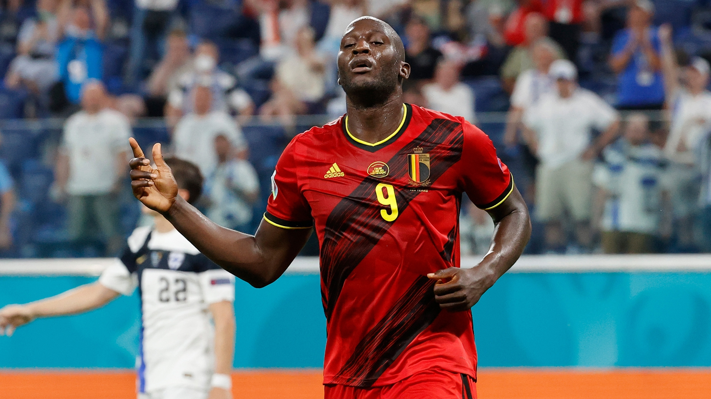
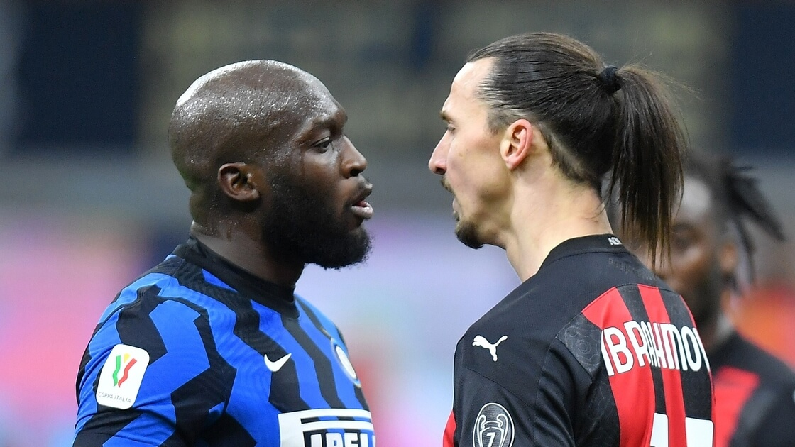
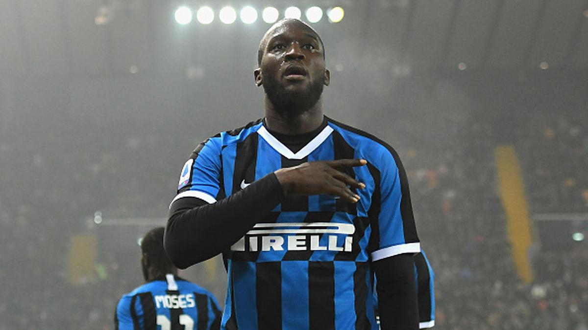

ULTIMAS NOTICIAS
Tras su paso por Chelsea, Lukaku regresó a Inter
El delantero belga Romelu Lukaku regresa al Inter de Milán, apenas un año después de haberse marchado al Chelsea, club que ahora lo cede al equipo italiano después de una mala temporada en Stamford Bridge, anunciaron las dos entidades este miércoles.
03 de Julio de 2022
Lukaku explotó contra el Chelsea y ahora quiere volver al Inter
Hace apenas cuatro meses, el Chelsea, actual campeón de la Champions League, pagaba 115 millones de euros por Romelu Lukaku, quien era un viejo conocido de la casa ya que había hecho inferiores en el elenco británico y venía de romperla toda en el Inter...
29 de Junio de 2022
Eden Hazard y Romelu Lukaku: el aviso del DT de Bélgica con miras al Mundial Qatar 2022
Roberto Martínez, entrenador de Bélgica, insinuó que Eden Hazard y Romelu Lukaku deberían mejorar sus situaciones para llegar en mejor forma al Mundial Qatar 2022.
13 de Junio de 2022